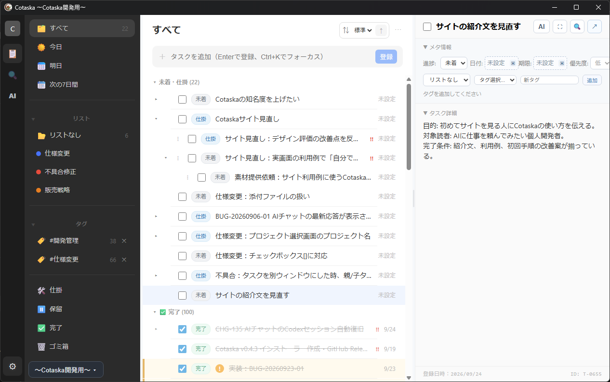
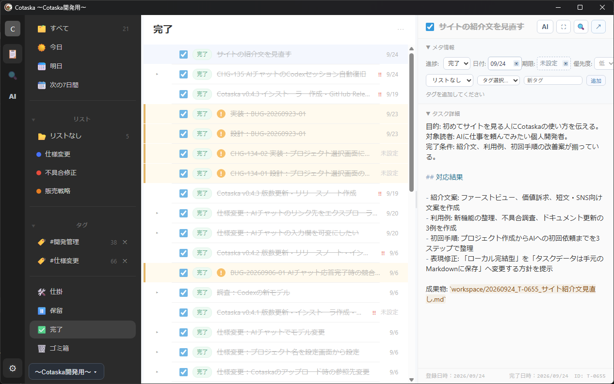

タスクから相談
背景や完了条件を持つタスクを基準に、相談や作業依頼を始められます。
Task management with built-in AI chat
Cotaskaは、タスク、Markdown、作業フォルダとAIとの会話をつなぐWindows向けアプリです。やりたいことをタスクに残し、その文脈のままAIへ相談・整理・作業を依頼できます。
One continuous workflow
AIへ依頼するたびに、背景や目的を説明し直していませんか。Cotaskaなら、人が管理しているタスクをAIとの会話につなげられます。相談の結果も次のタスクも同じ場所で確認できるため、会話と実作業が分断されません。
AI workspace
タスクや参照ファイルを開いたまま依頼し、返答と成果物を同じ作業の流れで確認できます。
背景や完了条件を持つタスクを基準に、相談や作業依頼を始められます。
入力欄でモデル、参照ファイル、実行権限を確認。モデル変更はプロジェクトの既定値にも反映されます。
返答に出てきたタスクやファイルを開き、残った作業をそのまま管理できます。
A real workflow
「サイトの紹介文を見直す」という同じタスクを、登録からAIへの依頼、結果確認まで追った実画面です。
やりたいことをタスクにし、対象読者や完了条件を記録します。右上の「AI」から、このタスクを参照したチャットを開けます。

入力欄で参照タスク、モデル、実行権限を確認して送信します。画面例では「このタスクに対応してください」と依頼しています。
AIの返答、タスクに残った対応結果、成果物へのリンクを確認します。サイト本体への反映など、残った作業は次のタスクとして管理できます。

Task management
今日、明日、次の7日間、リスト、タグ、サブタスクで日々の作業を整理。背景やメモはMarkdownで残せるため、人が読みやすく、必要なときはAIにも共有できます。

Local-first data
タスクの正本はローカルフォルダのMarkdownファイルです。Cotaskaだけでなく、エディタやGitからも確認できます。AIチャットの履歴もローカルに保存されます。
data/
tasks/
T-0001.md
T-0002.md
ai.sqlite
lists.yamlAIチャットの利用時には、選択したAIサービスとの通信が発生します。CotaskaはOpenAI APIキー、Codexのアクセストークン、認証ファイルの内容を保存しません。
Start with your next task
Windows向けインストーラーをGitHub Releasesで公開しています。Cotaska本体は無料です。AIチャットには連携先サービスの契約・利用枠・料金が別途適用されます。